記事編集：6月12日
このページでは受信トレイのレイアウトの変更方法や、初期設定されているカテゴリーの外し方について解説しています。
レイアウトの設定を行うには「クイック設定」を開く必要があります。画面右上の歯車アイコンをクリックしてください。
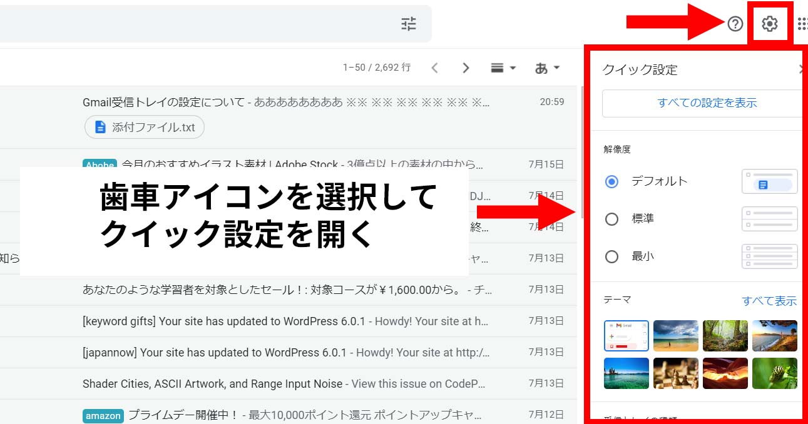
クイック設定では受信トレイのレイアウトに関する5つの設定を行えるようになっています。
それぞれ解説していきましょう。
解像度ではスレッド（行）の高さやデザインを変更することが出来ます。設定次第ではOutlookのように行を細くして表示したり、添付ファイルがついていることをわかりやすく表示させる ことが出来ます。
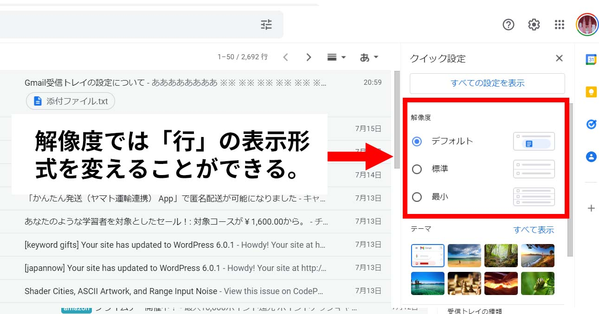
デフォルトの場合、行の高さは「標準」となります。さらに添付ファイルがついていることが一目でわかるようになっています。
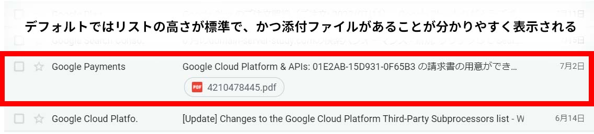
標準の場合、行の高さは「標準」となります。添付ファイルの表示は行の右側に渦巻アイコンが表示されます。
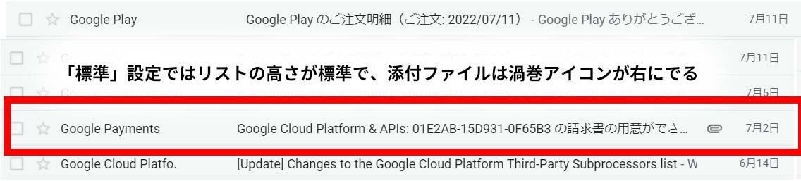
最最の場合、ソフト版Outlookのように行の高さが「狭く」なっています。添付ファイルの表示は行の右側に渦巻アイコンが表示されます。
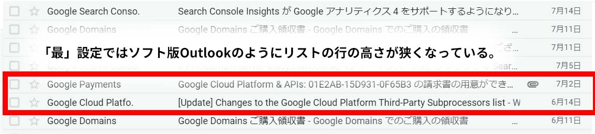
テーマではGmail管理画面の背景を変更することができます。単色から、用意されている様々な背景写真などから選べます。
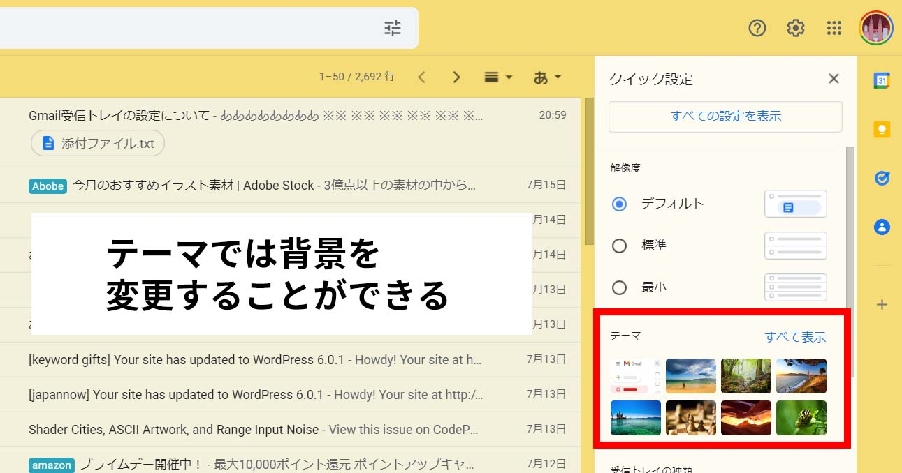
受信トレイを「デフォルト」設定にするとソーシャル、プロモーション、フォーラムのカテゴリーが優先的に表示されるようになります。カスタマイズから外す設定もできます。
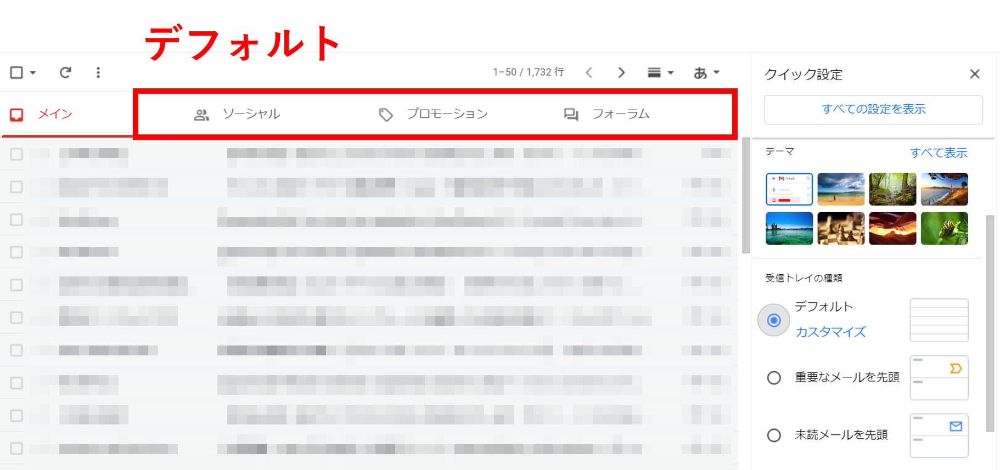
「重要なメールを先頭」に設定した場合、Gmailが選ぶ重要メールが1番上に表示されるようになります。
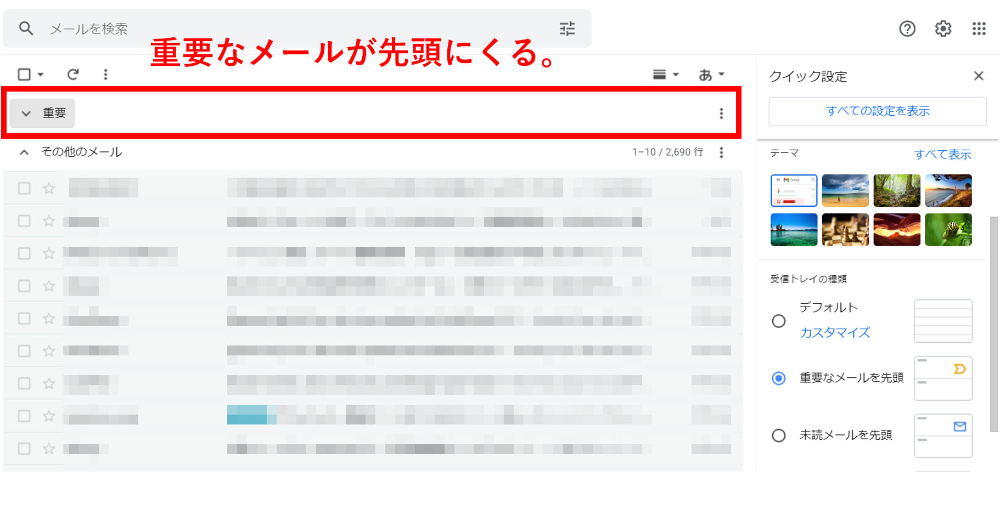
「未読メールを先頭」に設定した場合、未読メールが1番上に表示されるようになります。
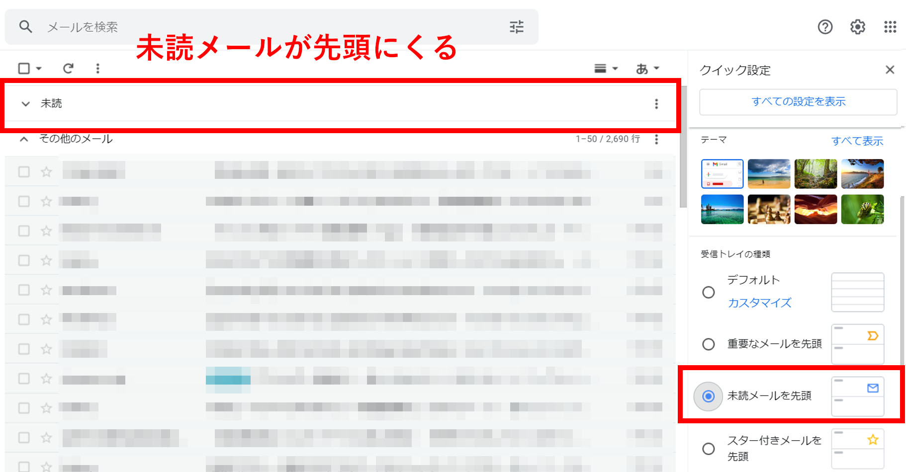
「スター付きメールを先頭」に設定した場合、自分でスターをつけたメールが1番上に表示されるようになります。
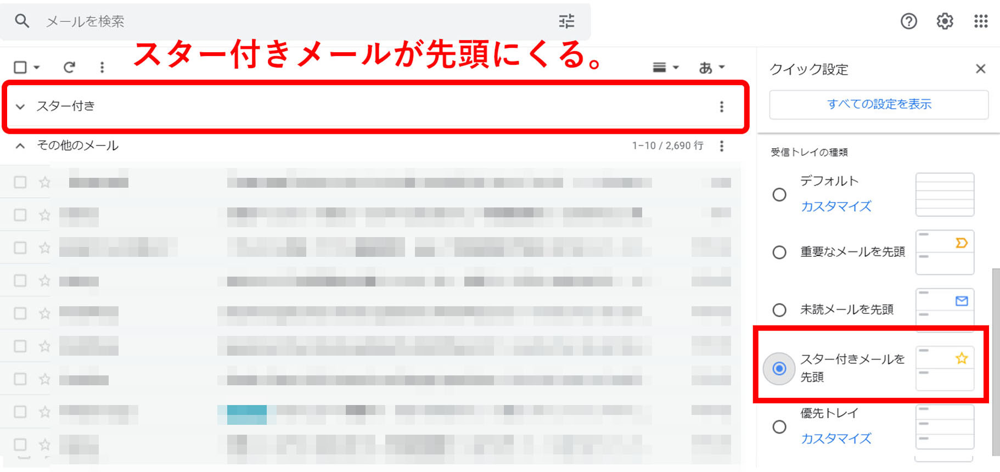
「優先トレイ」に設定した場合、「重要なメール」「未読メール」「スター付きメール」など自分でカスタマイズして設定することが出来ます。
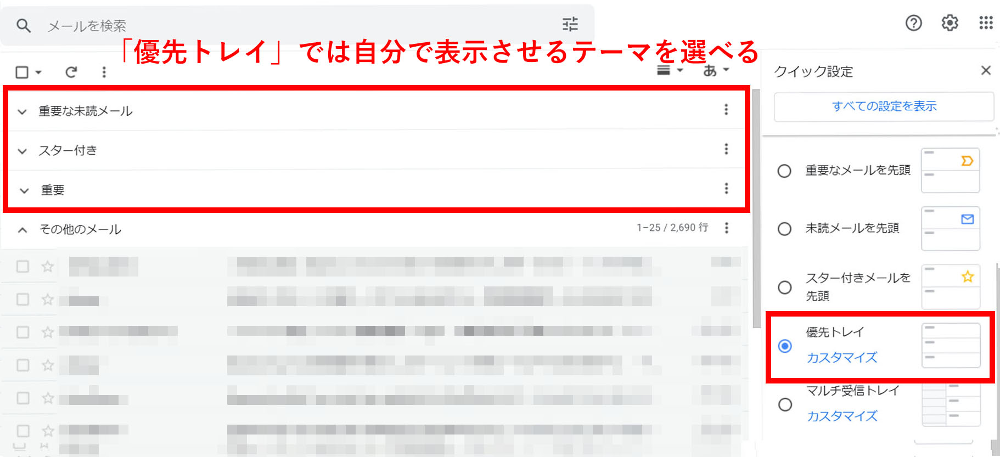
「マルチ受信トレイ」に設定した場合、自分で作ったメールフィルターが1番上に表示されることになります。
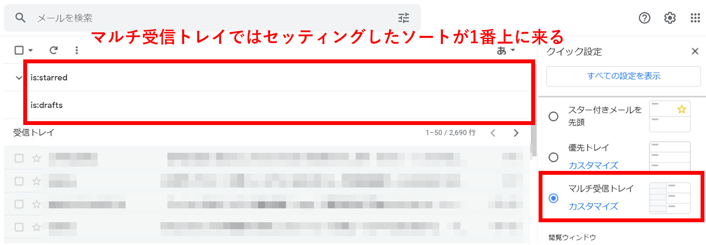
メール文面を画面内に同時表示させるかどうか、表示させる場合、どこに設置するかを設定することが出来ます。
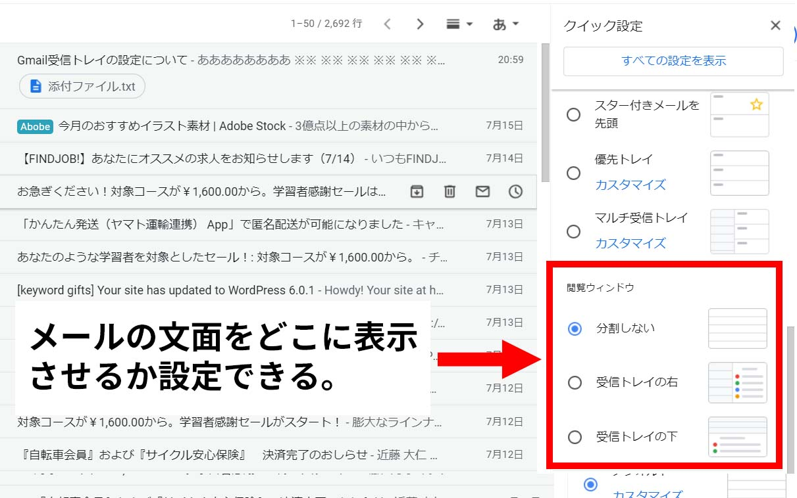
分割しないを選んだ場合、メール文面は画面内に表示されません。スレッドからメールをクリックした時点で画面が切り替わり、 メールの内容が表示されます。
「受信トレイの右」を選択した場合、受信トレイが左右にわかれて、右側にメールの内容が表示されます。
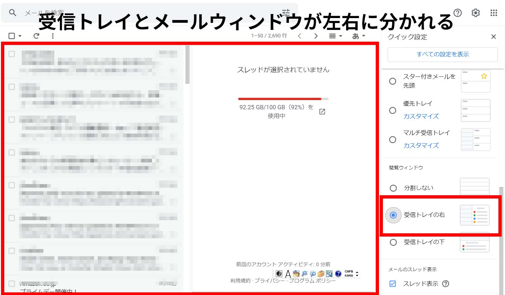
「受信トレイの下」を選択した場合、受信トレイが上下にわかれて、下側にメールの内容が表示されます。
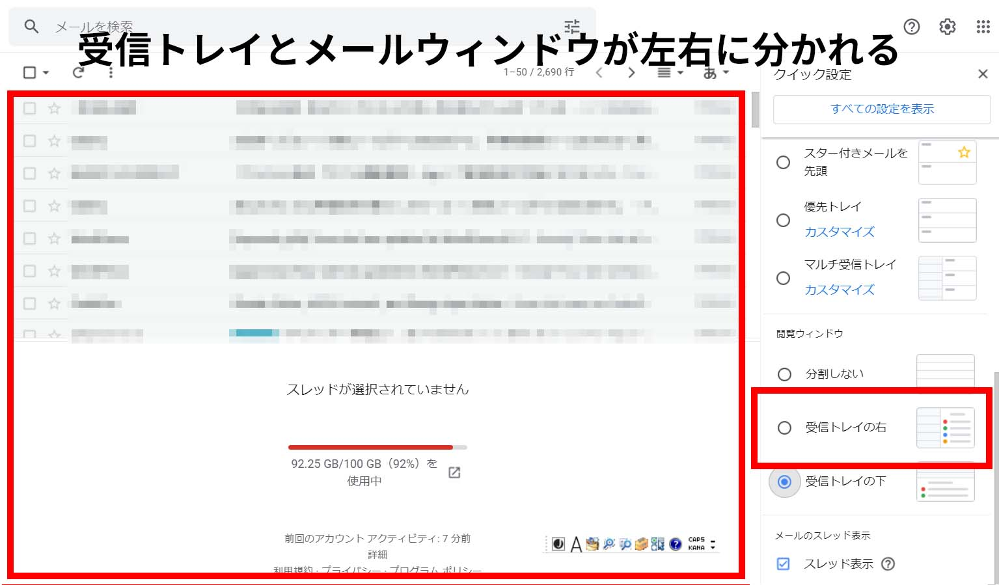
メールのスレッド表示ではメールに返信をした場合の表示形式を設定することが出来ます。
「スレッド表示」にチェックボックスを付けた場合、メールスレッドの右側にやり取りをした回数分の数字が表示されます。
「スレッド表示」のチェックボックスを外した場合、返信をしたメールについては矢印の表示がでます。 2回目以降のメールに関しては、スレッドが分かれます。
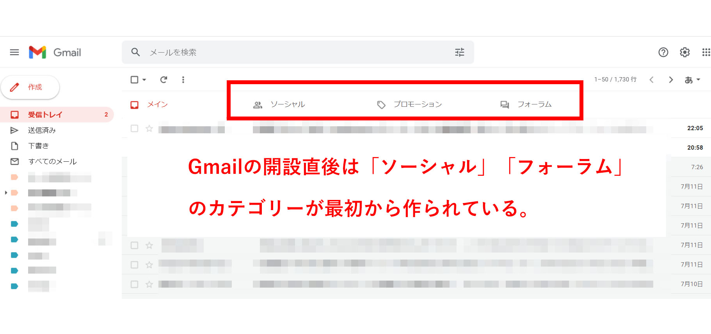
まずGoogleアカウントを開設した状態では、最初に「ソーシャル」「プロモーション」「フォーラム」へのカテゴリーが作られていて 自動的に振分けされるようになっています。
例えば「ソーシャル」カテゴリーにはTwitterやInstagramなどから送られてくるメールが振り分けられます。
これを解除したい場合は、以下の操作方法が必要になります。
まずは設定画面を開きましょう。
PC版の場合は画面右上の「歯車アイコン」＞「すべての表示を設定」＞「受信トレイ」＞「カテゴリ」を選択してください。
スマホ版の場合は画面左上の「三本線」＞「設定」（表示が隠れている場合は”もっと見る”で表示を出す）＞「受信トレイ」＞「カテゴリ」を選択してください。
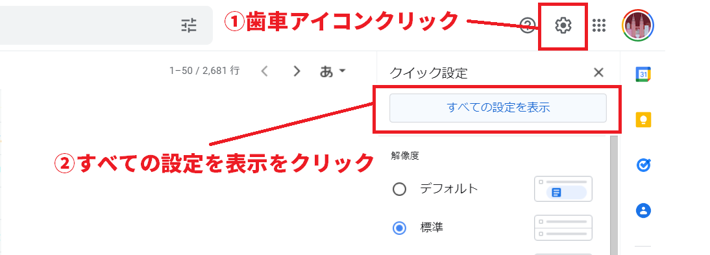
「ソーシャル」「プロモーション」「フォーラム」についているチェックボックスを外しましょう。
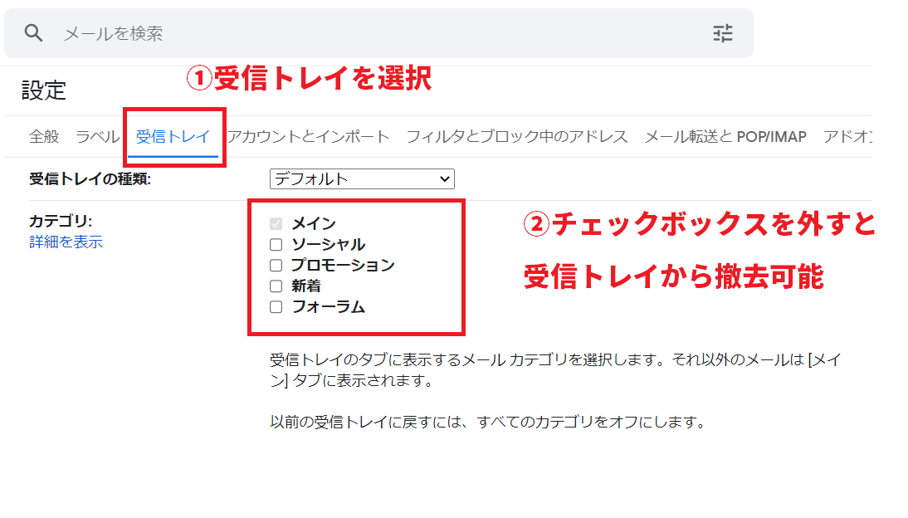
設定をすることで、受信トレイのカテゴリーが非表示状態になり、自動振分けもされなくなります。
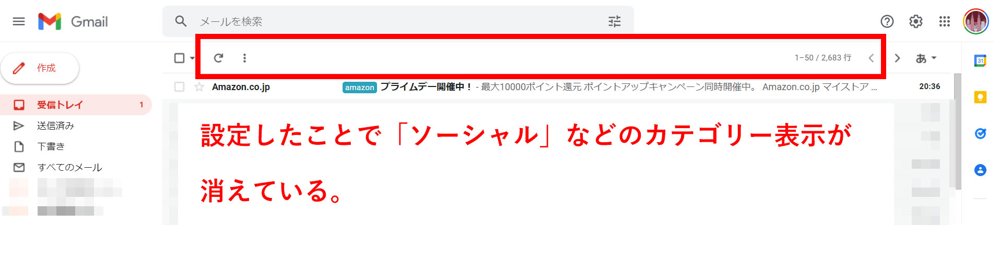

demiglaze
Web制作を始めて約19年になります（HTML/css、Photoshop、Webマーケティング）。2005年から当サイトの運営を開始。 これまでに300個以上のドメインを取得、10社を超えるレンタルサーバーを利用してきました。